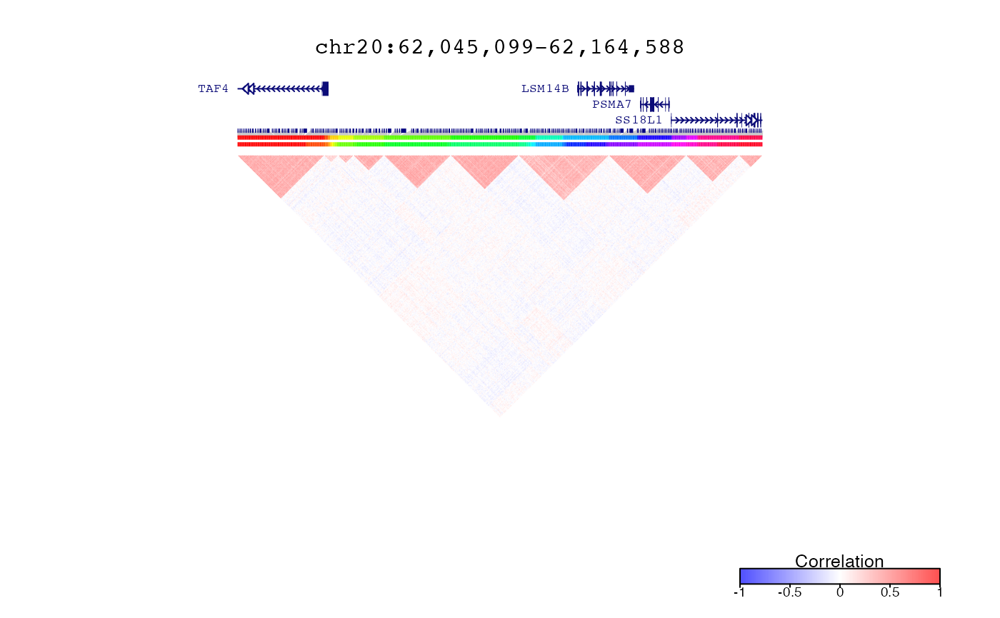
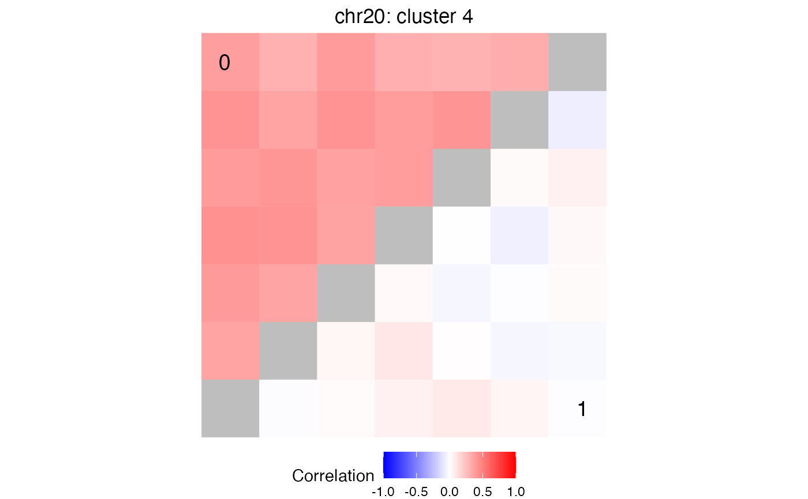

Evaluate Differential Correlation between two subsets of data
evalDiffCorr( epiSignal, testVariable, gRanges, clustList, npermute = c(100, 10000, 1e+05), adj.beta = 0, rho = 0, sumabs.seq = 1, BPPARAM = bpparam(), method = c("sLED", "Box", "Box.permute", "Steiger.fisher", "Steiger", "Jennrich", "Factor", "Mann.Whitney", "Kruskal.Wallis", "Cai.max", "Chang.maxBoot", "LC.U", "WL.randProj", "Schott.Frob", "Delaneau", "deltaSLE"), method.corr = c("pearson", "kendall", "spearman") ) # S4 method for EList,ANY,GRanges,list evalDiffCorr( epiSignal, testVariable, gRanges, clustList, npermute = c(100, 10000, 1e+05), adj.beta = 0, rho = 0, sumabs.seq = 1, BPPARAM = bpparam(), method = c("sLED", "Box", "Box.permute", "Steiger.fisher", "Steiger", "Jennrich", "Factor", "Mann.Whitney", "Kruskal.Wallis", "Cai.max", "Chang.maxBoot", "LC.U", "WL.randProj", "Schott.Frob", "Delaneau", "deltaSLE"), method.corr = c("pearson", "kendall", "spearman") ) # S4 method for matrix,ANY,GRanges,list evalDiffCorr( epiSignal, testVariable, gRanges, clustList, npermute = c(100, 10000, 1e+05), adj.beta = 0, rho = 0, sumabs.seq = 1, BPPARAM = bpparam(), method = c("sLED", "Box", "Box.permute", "Steiger.fisher", "Steiger", "Jennrich", "Factor", "Mann.Whitney", "Kruskal.Wallis", "Cai.max", "Chang.maxBoot", "LC.U", "WL.randProj", "Schott.Frob", "Delaneau", "deltaSLE"), method.corr = c("pearson", "kendall", "spearman") ) # S4 method for data.frame,ANY,GRanges,list evalDiffCorr( epiSignal, testVariable, gRanges, clustList, npermute = c(100, 10000, 1e+05), adj.beta = 0, rho = 0, sumabs.seq = 1, BPPARAM = bpparam(), method = c("sLED", "Box", "Box.permute", "Steiger.fisher", "Steiger", "Jennrich", "Factor", "Mann.Whitney", "Kruskal.Wallis", "Cai.max", "Chang.maxBoot", "LC.U", "WL.randProj", "Schott.Frob", "Delaneau", "deltaSLE"), method.corr = c("pearson", "kendall", "spearman") )
| epiSignal | matrix or EList of epigentic signal. Rows are features and columns are samples |
|---|---|
| testVariable | factor indicating two subsets of the samples to compare |
| gRanges | GenomciRanges corresponding to the rows of epiSignal |
| clustList | list of cluster assignments |
| npermute | array of two entries with min and max number of permutations |
| adj.beta | parameter for sLED |
| rho | a large positive constant such that A(X)-A(Y)+diag(rep(rho,p)) is positive definite. Where p is the number of features |
| sumabs.seq | sparsity parameter |
| BPPARAM | parameters for parallel evaluation |
| method | "sLED", "Box", "Box.permute", "Steiger.fisher", "Steiger", "Jennrich", "Factor", "Mann.Whitney", "Kruskal.Wallis", "Cai.max", "Chang.maxBoot", "LC.U", "WL.randProj", "Schott.Frob", "Delaneau", "deltaSLE" |
| method.corr | Specify type of correlation: "pearson", "kendall", "spearman" |
list of result by chromosome and clustList
Correlation sturucture between two subsets of the data is evaluated with sparse-Leading-Eigenvalue-Driven (sLED) test:
Zhu, Lingxue, Jing Lei, Bernie Devlin, and Kathryn Roeder. 2017. Testing high-dimensional covariance matrices, with application to detecting schizophrenia risk genes. Annals of Applied Statistics. 11:3 1810-1831. doi:10.1214/17-AOAS1062
library(GenomicRanges) library(EnsDb.Hsapiens.v86) # load data data('decorateData') # load gene locations ensdb = EnsDb.Hsapiens.v86 # Evaluate hierarchical clsutering treeList = runOrderedClusteringGenome( simData, simLocation )#>#># Choose cutoffs and return clusters treeListClusters = createClusters( treeList, method = "meanClusterSize", meanClusterSize=c( 10, 20) )#># Plot correlations and clusters in region defined by query query = range(simLocation) # Plot clusters plotDecorate( ensdb, treeList, treeListClusters, simLocation, query)# Evaluate Differential Correlation between two subsets of data sledRes = evalDiffCorr( simData, metadata$Disease, simLocation, treeListClusters, npermute=c(20, 200, 2000))#> #>#>#>#>#>#>#> id chrom cluster pValue stat n.perm p.adjust #> 1 20 chr20 4 0.0004997501 -2.1949654 2000 0.006163585 #> 2 10 chr20 4 0.0004997501 -0.7501589 2000 0.006163585 #> 3 20 chr20 2 0.0004997501 -0.7501589 2000 0.006163585 #> 4 10 chr20 14 0.1094527363 0.1434676 200 0.822222222 #> 5 10 chr20 40 0.1641791045 -0.3653258 200 0.822222222 #> 6 20 chr20 6 0.2039800995 0.9957963 200 0.822222222# extract peak ID's from most significant cluster peakIDs = getFeaturesInCluster( treeListClusters, df$chrom[1], df$cluster[1], "20") # plot comparison of correlation matrices for peaks in peakIDs # where data is subset by metadata$Disease main = paste0(df$chrom[1], ': cluster ', df$cluster[1]) plotCompareCorr( simData, peakIDs, metadata$Disease) + ggtitle(main)